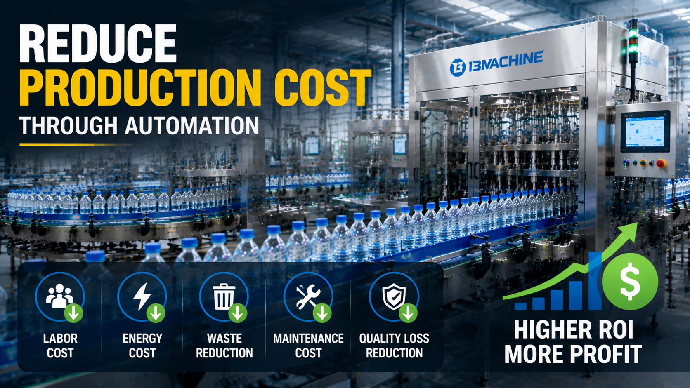

How Beverage Factories Reduce Production Cost Through Automation

Summary
For beverage manufacturers, reducing production cost has become one of the most important challenges in global competition.
Many factory owners initially believe automation means higher investment.
However, modern manufacturing has changed.
The question is no longer:
"How much does automation cost?"
The more important question is:
"How much cost can automation save during the next 5-10 years?"
A modern automated beverage factory reduces long-term production costs through:
Lower labor dependency
Higher production efficiency
Reduced material waste
Better quality control
Lower maintenance cost
Improved energy management
This article explains how beverage factories can use automation technology to reduce manufacturing costs while improving production stability and long-term competitiveness.
Technology
- Automation Technologies That Reduce Beverage Production Cost
- Modern beverage factories combine multiple automation technologies to optimize the entire manufacturing process.
- 1. Automated Production Line
- A complete beverage production line connects:
- PET Bottle Production
- ↓
- Filling
- ↓
- Capping
- ↓
- Labeling
- ↓
- Packaging
- ↓
- Warehouse
- Benefits:
- Continuous production
- Less manual handling
- Higher output stability
- 2. Industrial Control System
- Modern production lines use:
- PLC control
- HMI operation
- Sensor monitoring
- Automatic adjustment systems
- These technologies improve:
- Production accuracy
- Equipment coordination
- Operating efficiency
- 3. Quality Inspection Automation
- Automated inspection systems monitor:
- Bottle quality
- Filling level
- Cap sealing
- Packaging appearance
- Reducing defective products directly reduces production waste.
- 4. Smart Factory Data Management
- Advanced factories integrate:
- MES systems
- Production monitoring
- Equipment data collection
- Helping managers understand:
- Production efficiency
- Equipment performance
- Cost structure
- 5. Automated Logistics
- Warehouse automation includes:
- Conveyor systems
- Robotic palletizing
- AGV transportation
- ASRS warehouse
- Reducing unnecessary material movement and labor costs.
Challenge
Why Beverage Manufacturers Need to Reduce Production Cost
The global beverage industry is becoming increasingly competitive.
Manufacturers are facing:
Rising labor costs
Higher energy prices
Increasing quality requirements
Faster delivery expectations
More product variety
Traditional production models are becoming difficult to maintain.
Challenge 1: Increasing Labor Costs
Traditional beverage factories require many operators for:
Material handling
Machine operation
Quality inspection
Packaging
Warehouse movement
As labor costs increase, production margins become smaller.
Challenge 2: Production Waste
Manual operations often create:
Bottle damage
Incorrect filling
Packaging defects
Material waste
Every rejected product increases manufacturing cost.
Challenge 3: Unstable Production Efficiency
Manual factories depend heavily on operator experience.
Problems include:
Different working speeds
Human errors
Production interruptions
Challenge 4: Difficult Factory Expansion
When demand increases, traditional factories often need:
More workers
More production space
More management effort
Scaling becomes expensive.
Challenge 5: Quality Requirements Are Increasing
Customers and regulations require:
Better traceability
Stable quality
Food safety control
Manual systems are becoming insufficient.
Solution
How Automation Reduces Beverage Manufacturing Cost
Automation should not be viewed as an equipment purchase.
It should be viewed as a long-term manufacturing strategy.
1. Reduce Labor Cost
Automation reduces dependency on repetitive manual work.
Examples:
Traditional factory:
Operators manually transfer bottles
↓
Workers inspect products
↓
Manual packaging
↓
Manual warehouse handling
Automated factory:
Automatic conveying
↓
Automatic inspection
↓
Automatic packaging
↓
Automated storage
Results:
Fewer operators required
Lower labor cost
More stable production
2. Improve Production Output
Automation allows factories to achieve:
Higher production speed
Longer continuous operation
Better equipment utilization
⭐Example:
Small production line:
3,000 bottles/hour
↓
Large automated line:
36,000 bottles/hour
Higher output helps reduce:
Cost per bottle
Equipment depreciation per unit
Labor cost per product
3. Reduce Material Waste
Automation improves control of:
Filling volume
Bottle handling
Packaging accuracy
Reducing:
Beverage waste
Packaging waste
Defective products
4. Reduce Quality Loss
Quality problems create hidden costs:
Product returns
Customer complaints
Rework
Production downtime
Automation improves:
Filling accuracy
Sealing consistency
Inspection reliability
5. Reduce Maintenance Cost
Modern equipment provides:
Condition monitoring
Fault detection
Preventive maintenance
Factories can identify problems before major failures occur.
6. Improve Energy Efficiency
Automation helps optimize:
Motor operation
Production scheduling
Equipment utilization
Reducing unnecessary energy consumption.
Workflow & Layout
📌 Automated Beverage Factory Cost Optimization Workflow
Raw Material Input
↓
PET Bottle Production
↓
Automated Filling
↓
Capping & Inspection
↓
Labeling
↓
Packaging
↓
Robotic Palletizing
↓
Automated Warehouse
↓
Distribution
📌 Smart Factory Data Flow
Production Equipment
↓
PLC Control
↓
MES System
↓
Production Data Analysis
↓
Continuous Improvement
Results & ROI
- How Automation Creates Long-Term ROI
- Automation investment should be evaluated through total factory performance.
- 1. Labor Cost Reduction
- Automation reduces repetitive jobs and allows workers to focus on:
- Production management
- Maintenance
- Quality improvement
- 2. Higher Production Capacity
- Higher output improves:
- Revenue potential
- Equipment utilization
- Market response speed
- 3. Lower Product Loss
- Better control reduces:
- Waste
- Reject rate
- Rework
- 4. Improved Production Stability
- Automated systems provide:
- Consistent operation
- Repeatable quality
- Predictable output
- 5. Faster Business Expansion
- An automated factory can scale easier when demand grows.
- 📌 Example ROI Consideration:
- Initial investment:
- $1 million automation project
- Potential benefits:
- Reduced labor expenses
- Higher production output
- Lower waste
- Better quality
- The value comes from years of operation
- not only the first year.
Equipment List
- A cost-optimized automated beverage factory may include:
- 📌 Production Equipment
- PET blow molding machine
- Filling machine
- Capping machine
- Labeling machine
- Packaging machine
- 📌 Automation Equipment
- Conveyor system
- PLC control system
- Industrial sensors
- Robotic systems
- 📌 Quality Control Equipment
- Bottle inspection system
- Filling inspection
- Cap inspection
- 📌 Smart Factory System
- MES system
- Production monitoring platform
- Data collection system
- 📌 Warehouse Automation
- Conveyor logistics
- AGV system
- ASRS warehouse
Project Overview / Opening
Automation Is Not a Cost, It Is a Manufacturing Advantage
For beverage manufacturers, the biggest challenge is not simply producing more products.
It is producing better products at a lower cost.
The factories that succeed in the future will not only compete through:
Cheap labor
Low equipment price
They will compete through:
Higher efficiency
Better automation
Stronger quality control
Smarter production management
Automation transforms beverage factories from labor-dependent production facilities into efficient industrial systems.
Key Points
- Five Ways Automation Reduces Beverage Production Cost
- 1. Reduce Labor Dependency
- Less repetitive manual operation.
- 2. Increase Production Efficiency
- More output with stable operation.
- 3. Reduce Waste
- Better control means fewer losses.
- 4. Improve Quality
- Stable processes create consistent products.
- 5. Enable Smart Factory Management
- Data helps managers optimize decisions.
Implementation / Workflow
How to Implement Beverage Factory Automation
Step 1: Analyze Current Production
Evaluate:
Current capacity
Labor cost
Production problems
Step 2: Identify Automation Opportunities
Analyze:
Bottleneck processes
Manual operations
Quality issues
Step 3: Design Automation Solution
Develop:
Equipment configuration
Production layout
Control strategy
Step 4: Integrate Production Systems
Connect:
Machines
Automation
Data systems
Step 5: Optimize Factory Operation
Monitor:
Production efficiency
Cost reduction
Quality improvement
Customer Value / Results
By implementing automation, beverage manufacturers can achieve:
⭐ Lower Manufacturing Cost
Reduce long-term operating expenses.
⭐ Higher Production Efficiency
Increase output without proportional labor growth.
⭐ Better Product Quality
Improve consistency and customer satisfaction.
⭐ Stronger Market Competitiveness
Respond faster to market demand.
⭐ Sustainable Factory Development
Build a scalable manufacturing system for future growth.
Conclusion / Next Step
Reducing beverage production cost is no longer only about finding cheaper labor or cheaper equipment.
The future of beverage manufacturing depends on building smarter, more efficient, and more integrated production systems.
Automation helps manufacturers reduce:
Labor cost
Production waste
Quality losses
Operational inefficiencies
while improving:
Production capacity
Product quality
Factory competitiveness
We help manufacturers worldwide design, source, integrate, and deliver industrial automation projects from China's manufacturing ecosystem.
Our services include:
Beverage production line planning
Automation solution design
Equipment supplier selection
Production system integration
Smart factory implementation
Whether you are building a new beverage factory or upgrading an existing production line, we can help transform your manufacturing goals into reliable industrial solutions.
📩 Contact us through our website Contact page and discuss your beverage factory automation project.
SEO Title
How Beverage Factories Reduce Production Cost Through Automation
SEO Description
For beverage manufacturers, reducing production cost has become one of the most important challenges in global competition.
Many factory owners initially believe automation means higher investment.
However, modern manufacturing has changed.
The question is no longer:
"How much does automation cost?"
The more important question is:
"How much cost can automation save during the next 5-10 years?"
A modern automated beverage factory reduces long-term production costs through:
Lower labor dependency
Higher production efficiency
Reduced material waste
Better quality control
Lower maintenance cost
Improved energy management
This article explains how beverage factories can use automation technology to reduce manufacturing costs while improving production stability and long-term competitiveness.
Related Blog
Start with Your Business Challenge
Tell us about your warehouse, factory, or production requirements. We'll help you explore practical automation solutions and relevant project references.